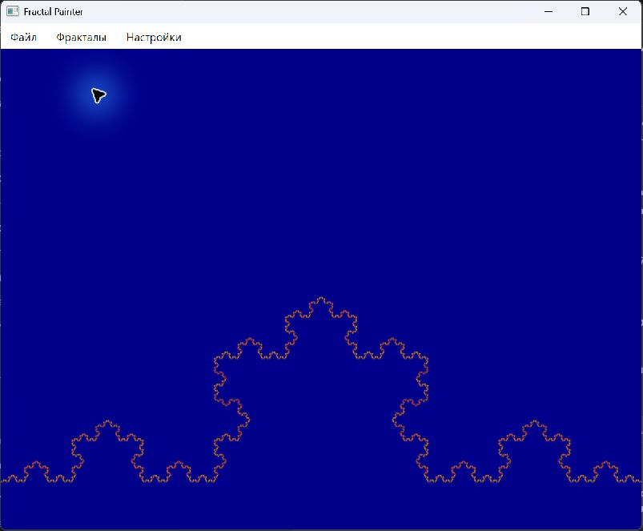
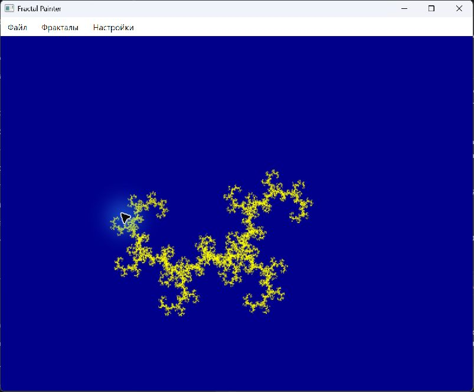

Не хватает регистрации
services.AddScoped<ReportService>();
public ReportService(IReportStore store)
{
this.store = store;
}IReportStore не зарегистрирован. Контейнер не может создать ReportService.
Один объект на всё приложение. Например, общий кэш.
services.AddSingleton<ReportCache>();Один объект на область. В ASP.NET Core обычно на один HTTP-запрос.
services.AddScoped<RequestContext>();Новый объект каждый раз, когда его запрашивают у контейнера.
services.AddTransient<ReportFormatter>();services.AddScoped<ReportService>();
public ReportService(IReportStore store)
{
this.store = store;
}IReportStore не зарегистрирован. Контейнер не может создать ReportService.
services.AddHttpContextAccessor();
services.AddSingleton<DBProvider>();
class DBProvider(IHttpContextAccessor http)
{
public ClaimsPrincipal User { get; }
= http.HttpContext!.User;
}Если объект создали в запросе Алисы, он сохранит её User и для запроса Бориса.
services.AddScoped<ReportService>();Контейнер сам передаст зарегистрированные зависимости. Их видно в конструкторе.
services.AddSingleton(sp => {
var s = sp
.GetRequiredService<ISettings>();
return new ReportCache(s.CacheSize);
});Функция сама берёт настройки и передаёт размер кэша в конструктор.
ValidateOnBuild не запускает лямбду. Ошибка внутри фабрики проявится, когда она выполнится.
var builder = WebApplication.CreateBuilder(args);
builder.Host.UseDefaultServiceProvider(options =>
{
options.ValidateOnBuild = true;
options.ValidateScopes = true;
});
var app = builder.Build();При Build() найдёт пропущенные зависимости в конструкторах зарегистрированных сервисов.
Проверяет, что singleton не зависит от scoped-сервиса и выдаёт ошибку, если scoped-сервис запросили без области.
В полночь ReportService читает данные для отчёта через DbContext.
await using var scope = scopeFactory.CreateAsyncScope();
var reports = scope.ServiceProvider
.GetRequiredService<ReportService>();
await reports.GenerateAsync(stoppingToken);На каждый отчёт своя область. В конце контейнер освобождает её DbContext.
Подключить оплату в ASP.NET Core
services.AddScoped<
IPayment, CardPayment>();Встроенного контейнера хватает для обычной регистрации.
Логировать каждый вызов оплаты
builder.RegisterDecorator<
LoggedPayment, IPayment>();Декоратор пишет в лог и передаёт вызов сервису оплаты.
Проверить настройки на старте
container.Verify();Пробует создать сервисы и проверяет, как связаны их времена жизни.
services.AddSingleton<INotifier, EmailNotifier>();
services.AddSingleton<INotifier, SmsNotifier>();
using var provider = services.BuildServiceProvider();provider.GetRequiredService
<INotifier>()SmsNotifier · последняя регистрация
provider.GetRequiredService
<IEnumerable<INotifier>>()EmailNotifier → SmsNotifier · в порядке регистрации
Перенесите сборку приложения на Microsoft DI в отдельной копии проекта.
Открывается. Все команды на месте.
Кривая Коха и дракон рисуются.
Цвет и размер применяются при рисовании.

